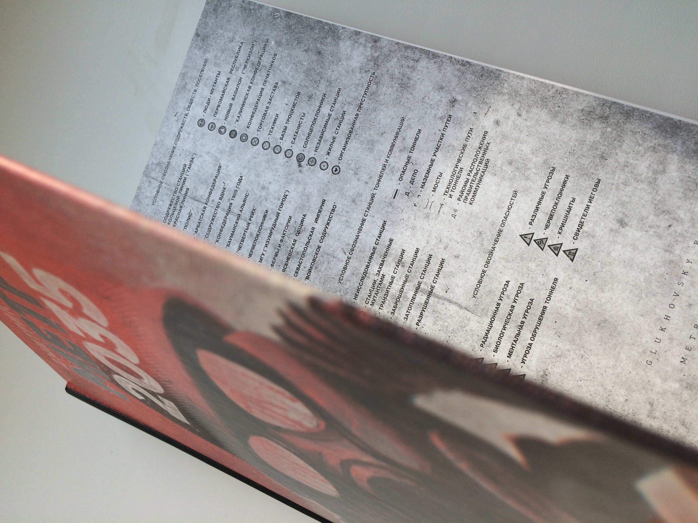
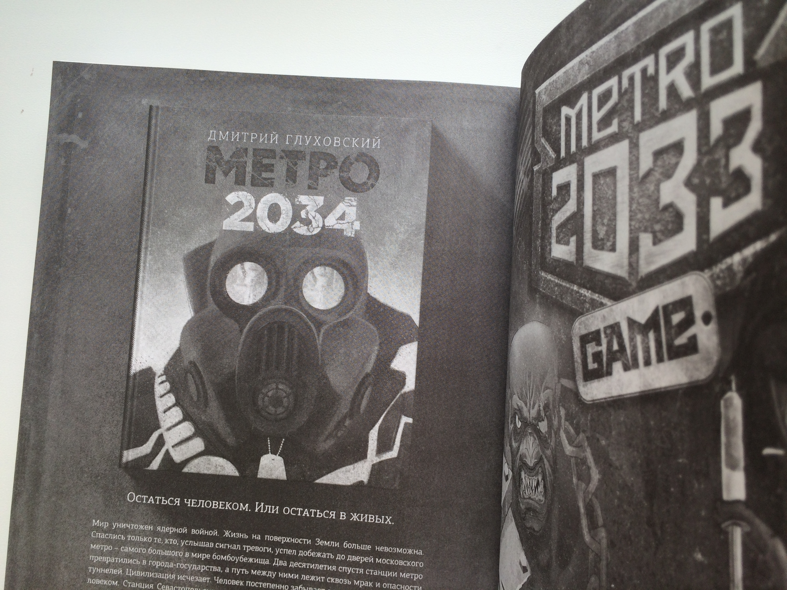
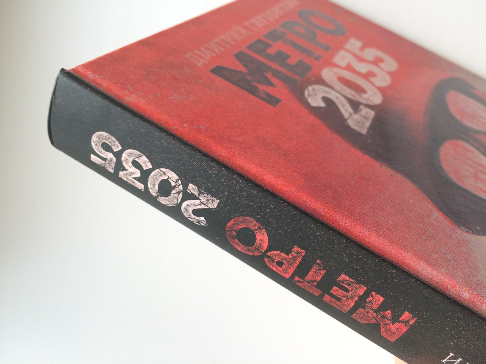
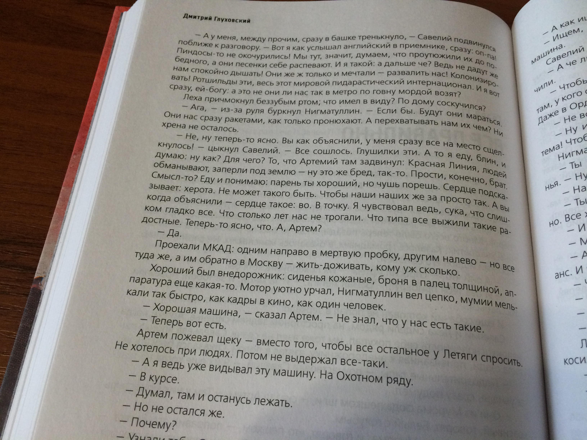
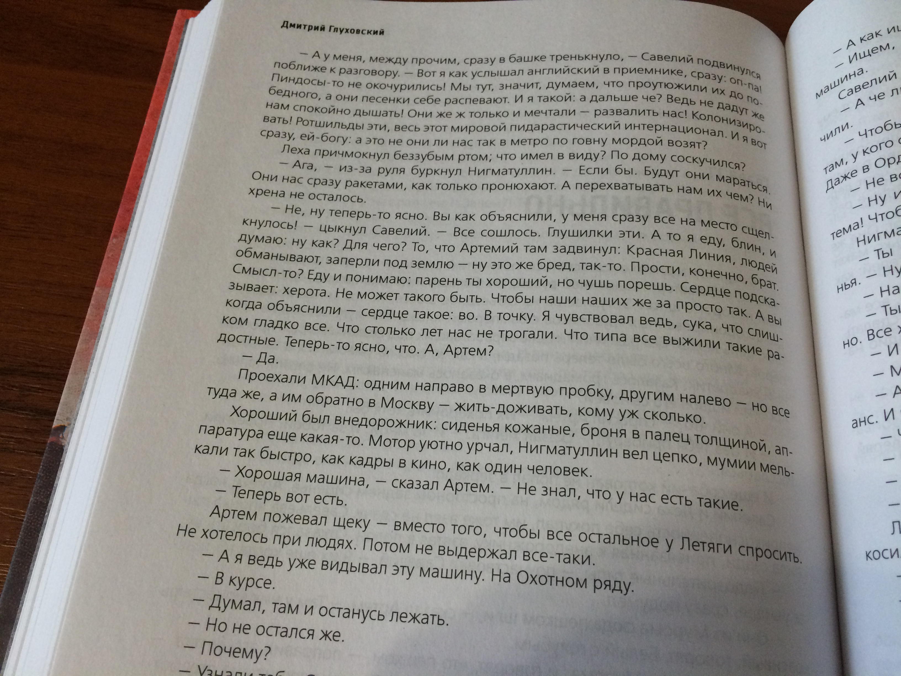

Начал читать новый роман Дмитрия Глуховского, Метро 2035. Сомнений у меня не было, что это роман очень интересный и захватывающий, так как это продолжение первой книги Метро (Метро 2033). Но книга стала немного взрослей и запутанней. Конечно в книги нет уже той интриги путешествия, но есть атмосфера апокалипсиса. Определённо можно сказать следующее, новый роман Дмитрия Гоуховского достоин внимания.
Читается также легко и быстро как и предыдущие части. Шрифт очень приятный для чтения, качество печати тоже хорошее. Если у вас всё ещё есть сомнения покупать или нет, так вот купить точно стоит, это всё ещё тоже Метро. Прямо скажем, я не специалист в оценки книжных изданий, так что не судите строго.
Аннотация
Третья мировая стерла человечество с лица Земли. Планета опустела. Мегаполисы обращены в прах и пепел. Железные дороги ржавеют. Спутники одиноко болтаются на орбите. Радио молчит на всех частотах. Выжили только те, кто, услышав сирены тревоги, успел добежать до дверей московского метро. Там, на глубине в десятки метров, на станциях и в туннелях, люди пытаются переждать конец света. Там они создали себе новый мирок вместо потерянного огромного мира. Они цепляются за жизнь изо всех сил и отказываются сдаваться. Они мечтают вернуться наверх – однажды, когда радиационный фон от ядерных бомбардировок спадет. И не оставляют надежды найти других выживших…
«Метро 2035» продолжает – и завершает историю Артема из первой книги культовой трилогии. Эту книгу миллионы читателей ждали долгие десять лет, и права на перевод иностранные издатели выкупили задолго до того, как роман был окончен. При этом «2035» – книга независимая, и именно с нее можно начать посвящение в сагу, которая покорила Россию и весь мир.
Фото обложки (твёрдый переплёт)
Метро 2035 - жизнь за гранью фантазии
   
